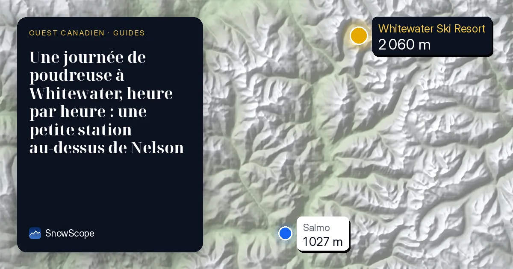

Une journée de poudreuse à Whitewater, heure par heure : une petite station au-dessus de Nelson
Whitewater est petite par conception. Elle se situe dans un haut bol des montagnes Selkirk, à courte distance en voiture de Nelson, et c'est exactement pour cela que les skieurs y reviennent. Par un matin enneigé, vous pouvez être le premier sur une piste de poudreuse avant que la plupart des stations ouvrent leurs remontées. Cet article vous montre comment se déroule un jour de tempête ici, de l'appel téléphonique avant l'aube à la dernière remontée de l'après-midi.
Consultez les prévisions neige en temps réel pour Whitewater Ski Resort sur l'application SnowScopeHauteurs de neige, alertes poudreuse et carte 3D, gratuitement.

Avant 6 h : la vérification nocturne
Un jour de poudreuse commence à l'intérieur. Vous avez besoin de trois choses avant de quitter Nelson : la dernière prévision de neige, le bulletin d'avalanches d'Avalanche Canada pour la région, et une vérification des conditions routières depuis le lac. Les grosses tempêtes apportent un vrai risque d'avalanche, et la route d'accès grimpe fortement, donc les pneus d'hiver ne sont pas optionnels.
Le moment de la première remontée dépend de la quantité de neige tombée et de sa stabilité. Une nuit calme avec peu de neige fraîche est différente d'une nuit où les montagnes ont été secouées par le vent. Le bulletin d'avalanches vous dit quelles pentes sont sûres et lesquelles sont interdites.

7 h : les 10 km de route depuis Nelson
Nelson est une ville de bord de lac sur le bras Ouest du lac Kootenay, et Whitewater se situe à environ 10 km au sud-est, dans le bol de Ymir. La route grimpe rapidement depuis l'eau, donc le trajet prend plus de temps par neige abondante que vous ne le penseriez. Les visiteurs de plus loin volent généralement vers Castlegar, à environ 43 km au sud-ouest.
La route ouvre tôt les jours de tempête à cette petite station, qui exploite cinq remontées de 1 390 m d'altitude à 2 060 m. Au moment où vous vous garez, la première piste devrait être skieée mais pas trop fréquentée.
8 h : la neige à trois altitudes différentes
Les 670 m de vertical de Whitewater sont assez raides pour que la profondeur de neige change tous les 300 m que vous montez. À la base, 1 390 m, les hivers typiques construisent un pic d'environ 136 cm en avril, avec environ 26 cm déjà au sol en novembre. À mi-montagne, 1 725 m, le tableau est plus profond : un pic typique de 165 cm, et début novembre environ 33 cm est tombé.
Plus haut encore, près du sommet à 2 060 m, le manteau neigeux est plus riche. Le pic typique de la saison est 197 cm, et mars et avril sont les mois les plus profonds. Cette bande est où les tempêtes tardives restent légères plus longtemps, et où la visibilité tend à être meilleure les matins de poudreuse.
9 h : les forêts versus les bols
Environ 62 pour cent de la montagne est classé terrain avancé, et un matin de tempête force un choix. Les forêts conservent une neige plus douce et un meilleur abri du vent, tandis que les bols ouverts peuvent être balayés par la tempête elle-même, surtout au sommet. Par une nuit venteuse, ce qui est tombé sur la crête a probablement atterri sous le vent.
Skiez avec un partenaire qui reste en vue dans les forêts, et testez la profondeur avec vos premiers virages avant de vous engager en vitesse. La neige fraîche sur du sol dur est rapide ; la neige fraîche sur un feuilletage faible peut cacher un problème. Les forêts sont gentilles, mais les forêts ont des rochers.
Midi : pourquoi les petites stations comptent
Le refuge de Whitewater n'est pas qu'un abri ; il a une réputation pour sa nourriture qui se propage au-delà de la vallée. Un déjeuner chaud et des gants secs remettent à neuf votre corps et votre esprit. Sur une station avec cinq remontées, vous pouvez manger sans avoir l'impression de perdre des heures à la file d'attente.
À midi, les lignes faciles sont skieées, et le vent au sommet aura trié la neige fraîche. C'est le moment où vous pouvez monter ou faire une randonnée jusqu'aux bords du terrain patrouillé, où la meilleure poudreuse se cache généralement.
Après-midi au soir : la saison en un jour
Whitewater a ouvert en 1976. Sur 46 hivers passés, sa profondeur de neige a été stable et profonde. À mi-montagne, le pic médian des quinze premiers hivers était d'environ 157 cm ; pour les quinze derniers, il était d'environ 168 cm. L'hiver dernier, 2025-2026, était légèrement en dessous, à 145 cm. Cela vous dit quelque chose : la montagne ne plaisante pas avec la neige.
En fin d'après-midi, la lumière faibit, mais le sommet reste blanc plus longtemps que les pentes inférieures. Si vous avez de l'énergie, c'est là que la meilleure neige non skieée de la journée attend généralement. À la tombée du jour, vous serez fatigué, heureux et prêt pour la descente vers Nelson.
Conseils aux skieurs
- Consultez le bulletin d'avalanches d'Avalanche Canada avant de quitter les pistes damées. Les jours de tempête signifient un vrai risque.
- Pneus d'hiver pour la montée de Nelson ; la route est raide et peut verglacer rapidement.
- Dans les forêts par un matin de tempête, skiez avec un partenaire en vue. Testez la profondeur avec les premiers virages.
- La neige sur la carte ne signifie pas que la station est ouverte. Vérifiez le site officiel et le rapport du matin pour l'état des remontées.
- Apportez des gants secs et mangez un déjeuner chaud ; les petites stations remplissent le refuge rapidement les jours de poudreuse.
À propos de ces chiffres
Les hauteurs de neige des stations sont la neige la plus épaisse sur le haut du domaine à la date indiquée ; ce sont des estimations pour une zone, pas une mesure en un point. Les prévisions peuvent changer. Consultez toujours le bulletin d'avalanche officiel avant le hors-piste.
Bulletins d'avalanche officiels: Avalanche Canada
Citer ce bulletin
Pour la recherche, l'enseignement ou la presse : chiffres et graphiques réutilisables librement sous CC BY 4.0 avec cette citation.
SnowScope (2026), Une journée de poudreuse à Whitewater, heure par heure : une petite station au-dessus de Nelson, https://snowscope.app/blog/fr/2026/11/whitewater-powder-day-hour-by-hour-nelson.html, consulté le 2026-11-09
SnowScope (Atlas Labs). (2026, November 9). Une journée de poudreuse à Whitewater, heure par heure : une petite station au-dessus de Nelson. SnowScope snow reports. https://snowscope.app/blog/fr/2026/11/whitewater-powder-day-hour-by-hour-nelson.html
BibTeX
@misc{snowscope2026whitewaterpowderdayhourb,
author = {{SnowScope (Atlas Labs)}},
title = {Une journée de poudreuse à Whitewater, heure par heure : une petite station au-dessus de Nelson},
year = {2026},
month = nov,
howpublished = {\url{https://snowscope.app/blog/fr/2026/11/whitewater-powder-day-hour-by-hour-nelson.html}},
note = {Published 2026-11-09 19:21 UTC; accessed 2026-11-09}
}· CC BY 4.0 · Méthodes, données et outils →
Suivre Whitewater Ski Resort
Gratuit : un message quand la neige arrive, et la météo chaque matin.